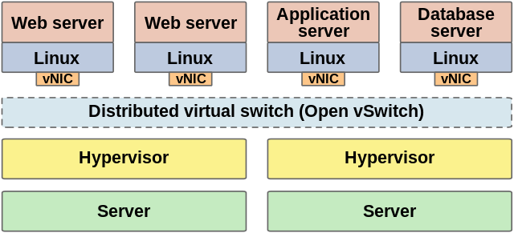

Libvirt ve OpenvSwitch
Bu yazimda libvirt ile openvswitch entegrasyonu hakkinda giris seviyesinde adim atacagiz. Kurulum ve entegrasyona gecmeden once bu iki yazilim nedir, ne degildir onlari taniyalim.
Libvirt [1] , Redhat tarafindan 2005'ten bu yana gelistirilmeye devam eden sanallastirma ortamlari icin daemon, API ve yonetim aracidir.

Libvirt bilinen bir cok hypervisor'u desteklemektedir. Iste bunlardan bazilari:
KVM
LXC
OpenVZ
Xen
User-mode Linux (UML)
Virtualbox
VMware ESX
VMware Workstation
Hyper-V
PowerVM
Parallels Workstation
Bhyve
OpenvSwitch [2] , kisaca sanal multilayer network switchtir. OpenvSwitch, bir SDN switch olarak hypervisor uzerindeki sanal makineleri fiziksel olarak ayri bulunan network switchler ile entegre calisarak yonetebilir.
Birden fazla protokolu desteklemektedir:
NetFlow
sFlow
SPAN
RSPAN
CLI
LACP
802.1ag
Kurulum:
Paket yoneticiniz ile libvirt ve openvswitch kurulumunu yapalim. Siz kendi dagitiminiza ve paket yoneticinize gore kurulumu yapabilirsiniz. Gentoo uzerinde, libvirt icin gerekli "USE FLAG"lari aktif edip kurulumunu yapalim.Binary dagitimlar icin buna gerek yoktur. Siz direk paket yoneticiniz ile kurulumu yapin.
/etc/portage/package.use/libvirt:
app-emulation/libvirt macvtap vepa qemu virt-network
Simdi kurulumu yapabiliriz.
# emerge -av libvirt
OpenvSwitch kurulumunu yapalim.
# emerge -av openvswitch
Sistem baslangici icin bu servisleri enable edelim.
# rc-update add ovsdb-server default # rc-update add ovs-vswitchd default # rc-update add libvirtd default # rc-update add libvirt-guests default
Sistem acilisinda bu modullerin yuklenmesi icin
/etc/conf.d/modules:
modules_4="openvswitch kvm kvm_intel tun"
Servisleri baslatalim.
# /etc/init.d/ovsdb-server start # /etc/init.d/ovs-vswitchd start # /etc/init.d/libvirtd start # /etc/init.d/libvirt-guests start
Comments